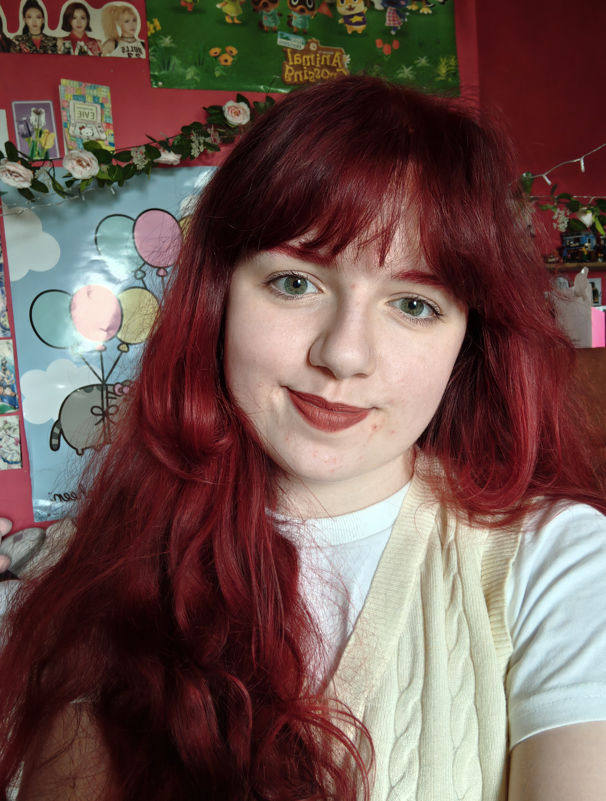
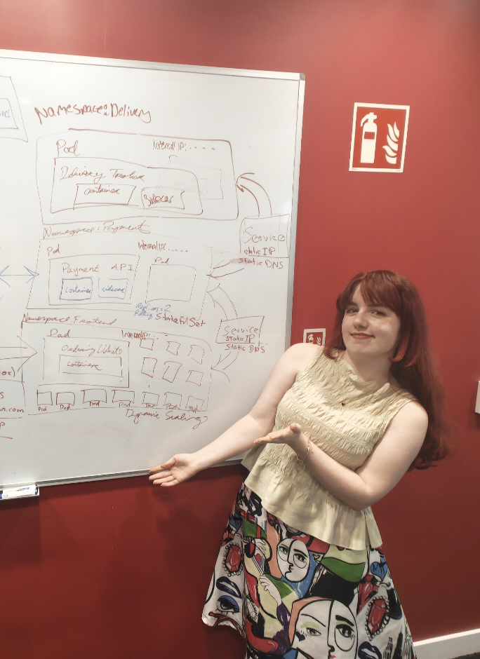
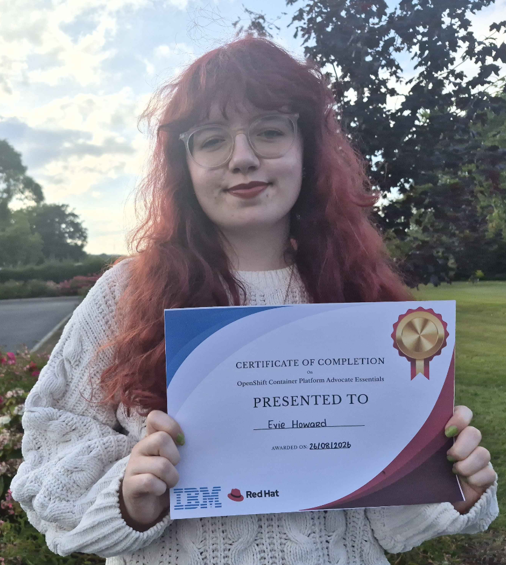
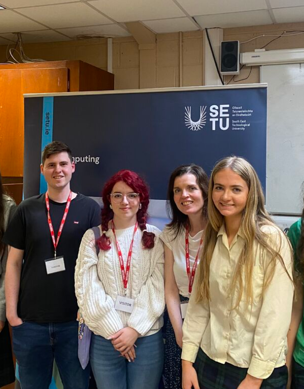

About Me
My name is Evie and I'm a third year student at SETU Waterford studying for a BSc (Hons) in Creative Computing.
My skills include HTML/CSS, Javascript, User Experience Design & Graphic Design, Adobe Creative Cloud Suite, and SQL.
I am currently completing my work placement as an AI Engineering Intern with the AgentOps team at Red Hat. I'm passionate about programming and design, and I love to learn new things.

You can find me on LinkedIn and Github, or contact me by email evie.howard2305@gmail.com.
Some More About Me
AI Engineering Intern (AgentOps)
Red Hat, Waterford (June - December 2026)
Responsibilities - I performed engineering tasks, contributing to both upstream and downstream codebases, working in multiple languages (Rust, Go, Python) as well as contributing to QE related tasks. I proactively utilised AI-assisted development and troubleshooted technical problems, delivering creative solutions. My other responsibilities involved being an active part of our agile development team (including serving as Scrum Master) and other tasks such as mentoring TY students. You can read about some of the projects I worked on on the 'Projects' page!
Skills Gained - Kubernetes/OpenShift administration & development, agile development, Jira, Rust, Go, testing (manual/unit/E2E), CI/CD pipelines, public speaking, AI-assisted development, RAG, sandboxing, MCP development

Manufacturing Operations Summer Student (PFS Inspection)
Sanofi, Waterford (May - August 2025)
Responsibilities - Performing manual inspection of Pre-Filled syringes as per SOP and following GMP, working alongside other inspectors in a controlled environment.
Skills Gained - Working in controlled environments, GMP compliance, adherence to SOPs, professional communication & interpersonal skills, initiative, teamwork, Electronic Batch Records, organisational/time-management skills
Technical
- Red Hat Enterprise Linux Systems Administration I
- OpenShift Administration I & II
- OpenShift Development I
- Red Hat Secure Software Development Continuing Education
- Red Hat & IBM OpenShift Container Platform Advocate Essentials
- ECDL
- Rustlings, 100 Exercises to Learn Rust, Rust by Example

Other
- Udemy - Complete Agile Scrum Master Certification Training
- Udemy - Business Skills: Email Etiquette Rules Everyone Should Know
- Udemy - Speak Like a Pro: Public Speaking for Professionals
- Udemy - Time Management Mastery: Productivity & Goals
- Member-To-Facilitator Workshop: Pathways to Professionalism with Youth Theatre Ireland
- Outstanding Leaving Cert Achievement Award
- SETU Computing Department Student of the Year Awards nominee
- Delegate to Youth Parliament on Climate Change in Dáil Éireann
NVIDIA OpenShell
I am a contributor to NVIDIA OpenShell and an active community member, participating in community calls, collaborating upstream, and monitoring open issues.
I was successfully vouched for in the community and have merged four PRs to date, including a contribution to the OpenShell Beta milestone. My contributions, including currently open PRs, can be viewed here.
Merged Contributions
- docs(prover): correct prove() exit code doc comment
- refactor(prover): remove legacy unused reachability constraints
- refactor(prover): separate outcome evaluation from rendering
- refactor(cli): remove local Dockerfile image builds
Student Volunteer
SETU Waterford Computing Department
I attended an all-girls secondary school and was the only student in my graduating year to pursue a Computer Science related discipline. I didn't have anyone to ask questions to or to look to as an example. I remember being afraid that I could be the only woman in my course or wouldn't be able for the technical content.
Since starting at SETU, I have returned to my school as a student volunteer every year to talk about my experience in college, why I chose to study computing, and what kind of opportunities are out there.
I am passionate about supporting women in tech and promoting computing as an option for young women to pursue.
